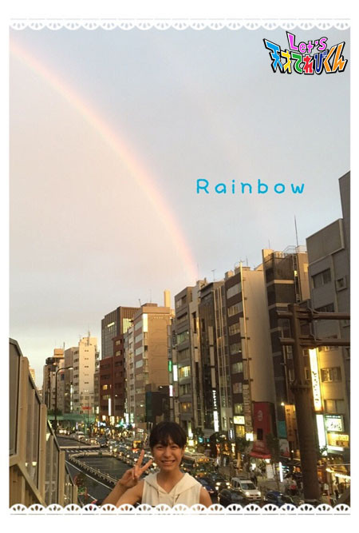
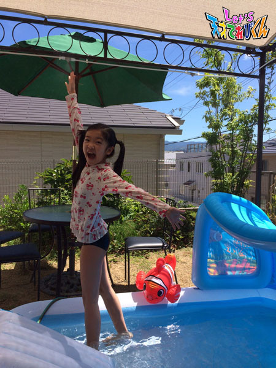
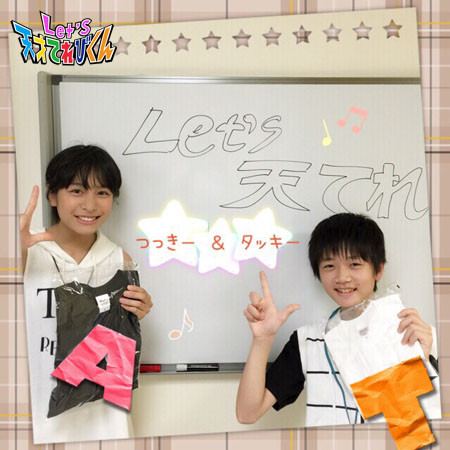
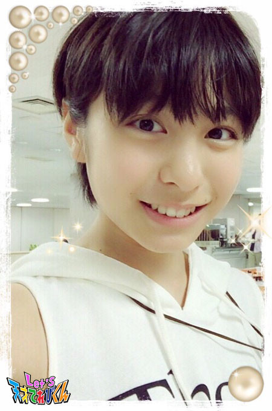

<<2015年7月 | トップページ | 2015年9月>>
2015年8月
『名前にまつわるエピソード』［杉本瑛］
みなさん、ドゥブリデン（チェコ語で「 こんにちは 」）！
この前、チョコレートソフトクリームを食べました。
濃厚なのにさっぱりしてて、上からチョコソースがかかってるから、もうたまりませーん！
すでに食欲の秋が始まっているもようです！！
今回のお題は『 名前にまつわるエピソード 』です ☆
赤ちゃんの頃の写真と今の瑛のツーショット（？）です。
瑛の名前の由来です。
瑛のパパの名前が
「 切磋琢磨（せっさたくま） 」の琢（ 珠（たま）を磨（みが）くという意味 だそう）なので、
「 光を宿した珠 」という意味で
同じ王へんで同じ画数（ パパの字は旧字体で12画なんです ）の【 瑛 】という字を、
ママが選んでつけてくれました。
当時は北京に住んでいたので、
中国語でもいい意味、いい響きの漢字かどうかも調べてくれたそうです。
音の方は、生まれるのが男の子でも女の子でもいいように考えてくれたそうです。
名前の響き、とってもとっても気に入っています（≧∇≦）
オマケ☆彡 領収書を書いてもらうとき、
宛名の瑛の字を説明するために「 王へんに英語の英です。」と言ったら、
英語の英を【 A （！）】と勘違いされてしまったことがあったので、
今は「 ウエンツ瑛士さんの瑛（えい）と同じ字です。」と言うようにしています ^o^
光を宿した珠。
これからも自分の名前に誇りをもって生きていこうと思いました。
投稿者:杉本瑛 | 投稿時間:18時45分 | カテゴリ：てれび戦士 | 固定リンク
『名前にまつわるエピソード』［笹原尚季］
こんにちは～ V(^_^)V
毎日暑いですね！
冷たい すいか がおいし～～季節ですね ☆
今回のお題は、『 名前にまつわるエピソード 』です！
ちなみに、僕はみんなから【 さっさ 】って呼ばれてます！
なぜさっさかというと、笹原から【 ささ 】をとって【 さっさ 】になりました。
いつの間にか、笹原さん から【 さっさ 】になっていました。
そして、なんと、お兄ちゃんのあだ名も【 さっさ 】です！
隣の家のお母さんと僕のお母さんは仲が良いのですが、
そのお母さんを僕のお母さんは「なおちゃん」と呼んでいるので、
僕を呼んでいるのか、隣の家のお母さんを呼んでいるのかすごくややこしくて、
「なおちゃん」と呼ばれると、僕を呼んでいないのに思わず「なに？」と言ってしまいます。
ちなみに、僕はどちらかというと、名前で呼んでくれる方がうれしいです。
なぜかというと、お母さんが、呼んだときにかわいい名前だからって
僕につけてくれた名前だからです (((o(*ﾟ▽ﾟ*)o)))
この頃は、「なおちゃん」って呼ばれることが多かったかな？？
僕は、尚季という名前が大好きです♪♪
投稿者:笹原尚季 | 投稿時間:18時45分 | カテゴリ：てれび戦士 | 固定リンク
『名前にまつわるエピソード』［桐畑カレン］
こんにちは。
カレンです (*^^*)
この前、子ども霞が関見学デーに行ってきました。
省庁のいろいろなお仕事を知ることができて、お勉強になりました。
そこで、「 三重県の真珠でドアプレートを作ろう！ 」というイベントがあったので
作ってみました～。
三重どちゃもん にんまるが、パールフラッシュで出した真珠がまざってるかも (^^)
家に帰ってきてから、臨海学校で拾ってきた貝がらをつけてみました♪
それでは、今回のお題について、お話したいと思います！
私はカタカナで【 カレン 】と書くので、
名前をみて「 ハーフなの？ 」と聞かれることがたまにあります。
でも、見てのとおりちがいます！
☆ なぜ名前がカタカナになったのか ☆
旅行が好きなお父さんとお母さんは、
世界中どこに行っても、親しみやすく呼んでもらえる名前がいいなあ、と
思っていたそうです。
そしていくつかのこうほの中から、
音の響きがいい【 カレン 】という名前に決めたそうです。
日本語の【 かれん 】は、愛らしい・かわいらしいという意味があります。
カタカナになった理由は、漢字・ひらがな・カタカナの中で、
カタカナが一番画数が良かったからだそうです。
私はカレンという名前が好きです♪
【 カレン 】という音が、ハンドベルの音のように心地よく澄んでいて、
とう明感のあるイメージで、きれいな感じがするから♪
あ！あと、プリントやテストに急いで名前を書くときや、
お習字の小筆で名前を書くときに、とっても書きやすいのもいいです (^^)
名前は初めてもらうプレゼント。
すてきな名前をつけてくれて、ありがとう (*^^*)
投稿者:桐畑カレン | 投稿時間:18時54分 | カテゴリ：てれび戦士 | 固定リンク
『名前にまつわるエピソード』［小澤竜心］
こんにちは！竜心です。
今日は、ぼくの名前のお話です (#^.^#)
ぼくは秋田で生まれました。
名前はお父さんが考えて、
お母さんと一緒に決めてくれたそうです。
【 竜 】のような強さと、
やさしい【 心 】を持った人になるようにと、
【 竜心 】という名前になりました。
「なにごとも、気持ちが大切なんだ。」って、
いつもお父さんに言われます！
秋田のおじいちゃんはドラゴンズファンなので、
とても喜んだんだってー (*≧∀≦*)
みなさんが「 りゅうしん 」って呼んでくれるので、
すっごくうれしいです♪
８月は、歌舞伎座の『 祇園（ぎおん）恋づくし 』に
出演させていただいています。
ぼくの夢だった舞台です。
とってもおもしろくて、思わず笑ってしまいます。
お客さまに喜んでもらえますように♪ヽ(´▽｀)/
これからも自分の名前に負けないように、
なにごとも一所けん命、がんばります。
投稿者:小澤竜心 | 投稿時間:18時45分 | カテゴリ：てれび戦士 | 固定リンク
『名前にまつわるエピソード』［齋藤茉日］
こんにちは ♪
茉日です ^ ^
今回のテーマは
『 名前にまつわるエピソード 』です ^ ^
私の名前は【 茉日 】で【 まひる 】と読みます！
↑ ご存知でしたか？
笑
茉日の【 茉 】はジャスミンという意味があるそうです ♪
なんだかおしゃれな気がするのは私だけ？
↑ 私だけですよね笑
私はジャスミン茶好きです ^ ^
なのでファミレスに行ったりしたときは
ジャスミン茶をよく飲みます ^o^
茉日の【 日 】は、おひさま。とか、午後。という意味もあるそうです ♪
なので、茉日は
「 ジャスミン茶を飲みながら午後のひとときをホッとできるような
あたたか～い感じの女の子になるといいなぁ 」
っていう思いがこもっているそうなのですが。。。
「 特にそんな深い意味もないけどね！ 」
という一言が ((((；ﾟДﾟ)))))))
一言余計です (´･_･`) 笑
でも、【 茉日 】という名前、気に入ってます ♪
名前の由来どおりの人になれているのかな？
なっているといいな！
それでは今回はこの辺で～
またね ♪
投稿者:齋藤茉日 | 投稿時間:18時45分 | カテゴリ：てれび戦士 | 固定リンク
『名前にまつわるエピソード』［小西憧弥］
こんにちは！憧弥です (^-^)/
この夏、東京の気温は35度超え！
暑くて昼間は外に出たくなーい (>_<)
ちょっとすずしくなった夕方に、自転車で探検に出たりしてます。
氷が好きだからボリボリ食べてたら、
お腹こわしちゃって、今は禁止されてます。
みんなも冷たいものの食べ過ぎに注意してね！
さて、本題『 名前にまつわるエピソード 』です。
【 とうや 】っていう名前は、
お父さんとお母さんが新婚旅行に行ったとき、決めたそうです。
北海道にスキーをしに行ったんだけど、ついでに観光でいろいろ見てて、
洞爺湖（ とうやこ ）という湖を見たんだって。
見たしゅん間【 とうや 】っていう、
かわいくて、かっこいいひびきにピンときて、
「 男の子が生まれたら【 とうや 】っていう名前にしよう 」と決めたそうです。
子どもの１人目が女の子だったから、つけられなくて、
２人目のぼくはすぐに【 とうや 】に決めたそうです。
まわりにあまりいない名前だから、気に入ってます (^-^)
投稿者:小西憧弥 | 投稿時間:18時45分 | カテゴリ：てれび戦士 | 固定リンク
『名前にまつわるエピソード』［飯島緋梨］
こんにちは！
飯島緋梨です ^o^
あっつい！！
なぜこんなに暑いのさー
こんな暑い日はお友達とプール！
スライダーもあって超楽しかった～
映画もみに行ったし
水族館にも行ったし
夏休み最高！
ずっと夏休みが続くといいな（＾∇＾）
さて！今回のお題は・・・
自分の名前の由来 ^ - ^
名前は！
【 あかり 】 ( ^ω^ )
緋梨の名前の由来は！
《 太陽のように明るくあかりを照らす温かい子になってほしいから 》
緋色（ ひいろ ）って太陽のように赤い鮮やかな朱色なんだって！
明るくて温かい子になれてる？笑
お母さん、お父さんがこの名前をつけてくれたから
チョットのことは考えたり悩んだりしないで
いつも明るく楽しく笑顔でいられるようにしたいな！
あ！
ちなみに大好きな家族の一員
ねこのにゃうの名前の由来は・・・
《 にゃーうにゃーう～ 》
と鳴くから【 にゃう 】だそうです笑笑
なんと緋梨が生まれるずっと前からいて
18年前、うちの前で拾って
お母さんがつけました＼(^o^)／
にゃう大好き！！
みなさんの名前の由来はなんですか？？
バイバイ ^o^
投稿者:飯島緋梨 | 投稿時間:18時45分 | カテゴリ：てれび戦士 | 固定リンク
『名前にまつわるエピソード』［林武尊］
こんにちは。
林武尊です。
この前、東京湾の花火をお母さんの会社から見ましたー！
大迫力で、いろんな形をした花火がありました。
例えばうずまきだったり、スーパーボールみたいだったり。
とにかくすごかったです。
また来年も行きたいなー
それから夏休みが始まってから出演していた舞台が、無事に終わりました！！
そのときの衣装がこれ！！
中学の楽しみをひとつ経験しちゃった？
舞台は、子どもは僕ひとりだけだったけど、
毎日とっても充実していて、すごく楽しかったでーす (*￣∇￣*)
では本題へ。
今回はニックネームの由来です！！
僕はいつもてれび戦士の中で「 たけそん！たけそん！ 」と呼ばれています。
なぜそういう呼び名になったかというと
僕の名前の漢字はこう書きます。
「 武尊 」
で、左を “ たけ ” と読んで、右を “ る ” と読みます。
右の漢字は “ 尊敬 ” の “ そん ” なんです！！
だからつなげて「 たけそん 」( ´∀｀)
イヤー、最初呼ばれたときは
「 なんで “ たけそん ” なんだろう 」って思ったけど、
理由を聞いたら簡単でした。
これ、結構気に入ってます（≧∇≦）
これ考えてくれたてれ戦のみんな～
ありがとね～！
投稿者:林武尊 | 投稿時間:18時54分 | カテゴリ：てれび戦士 | 固定リンク
『名前にまつわるエピソード』［原田明莉］
☆Hello☆
明莉です！！
この間、空手の関東大会がありました！
結果は準優勝。
めちゃくちゃ悔しかったです！
でも、前の試合でできなかったことを今回の試合でできて、試合内容は良かったし、
次の目標も見つかったので、よかったです！
準優勝まで全国大会に出場できるので、予選をバネに本戦を頑張ってきます！！！
・・・さてさて、本題に入ります！！
今日のテーマは
『 名前にまつわるエピソード 』
です！
私！いろんなあだ名があります！
学校、空手 → あーちゃん、あかり
てれび戦士 → だーはら、ぱら田ちゃん
その他 → あっちゃん などなど
いろんなのがあるんですが、どれも意味はないと思うんです！！
しかもどうなって、「 あーちゃん 」やら「 だーはら 」やら
あだ名をつけてもらったかは覚えてないんです・・・。
でも！！ひとつ思ったことがあります！
あだ名をつけることで、その人とその人の距離感が縮まるな！
と、いつも思います！
名前で「 ○○さん 」って言うよりも
何かあだ名をつけると、なんか親近感というか、友達というか、
そんなふうに、しゃべりやすくなっていくんです！
あだ名をつけることって、
コミュニケーションをとるひとつの技術だと思ったりします！
自分的には名字や名前で「 ○○さん 」って言われるよりも
やっぱりあだ名やちゃん付けで、呼んでもらえる方がうれしいです ^ ^♪
みんな、これからもよろしくね！！！
☆Let's Nickname☆
投稿者:原田明莉 | 投稿時間:18時45分 | カテゴリ：てれび戦士 | 固定リンク
『名前にまつわるエピソード』［辻村晃佑］
どーも辻村晃佑です！
最近、料理に何を入れたらおいしくなるのかに興味をもってます (^○^
例えば、カレーは最後の仕上げに
チョコレートやオイスターソースを入れるとコクが増します！
カレーが濃すぎたら、乳製品を入れるとまろやかになって食べやすくなります。
バターでお肉や野菜を炒めると、バターチキンカレー風になります。
これらもおいしくなるんですが、
ぼくが個人的におすすめなのが、
カレーに隠し味としてイチゴを入れることです！
イチゴを入れるとフルーティーになって、
イチゴの甘味とカレーがとてもマッチしてます。
このことは、小学５年生のときの学校行事で、
班のみんなとカレーを作ったときに発見しました！
お母さんはなぜかうたがって、一度も試してくれませんが・・・( ；∀；)
これからもいろんな料理がおいしくなるような発見をしたいなーと思っています (^o^)
さて本題です。
名前の由来です！
親に聞いてみたところ、
晃佑の【 晃 】は「周りを明るくすること」で、
【 佑 】は「周りを助ける」という意味があり
そういう人になってほしいという気持ちをこめてつけたそうです。
こういう意味があるとは知らなかった (；´_ゝ`)
この名前に負けないように、これからも頑張るぞー！
投稿者:辻村晃佑 | 投稿時間:18時45分 | カテゴリ：てれび戦士 | 固定リンク
『名前にまつわるエピソード』［赤崎月香］
こんにちは ヽ(^▽^@)ノ
赤崎月香です。
この前、とてもさみしいことがありました ( ┰_┰)
泣かないように我慢したけど、
我慢できずにポロポロポロ・・・
そしたら！！！！
帰り道の空に、虹が出ていました ♪
さみしくて悲しい気持ちが、
ちょっとだけ晴れた気分になりました。(￣∇￣+)
虹をみると、何か良いことが
ありそうな予感がします。Ｏ(≧▽≦)Ｏ
☆。・:*:・°★,。・:*:・°☆
『 ☆名前にまつわるエピソード☆ 』
私の名前は、赤崎月香（あかさき つきか）です。
もう覚えてもらえたかな？ (*^.^*)
みんなには、
「 つっきー 」「 つきちゃん 」「 つきか 」「 あかさき 」
などと呼ばれています。
つっきーと呼ばれるのが好きかなぁ～ ♪
おつきちゃんも結構好きだなぁ～ ♪
お父さんとお母さんに聞いたら、
名前は、子どもにあげる１番最初のプレゼントだから
すごく考えたんだよー！！
みんなの意見も聞いたり、本も読んだり・・・
でも決めては、インスピレーション！！
だって～
|||||／(￣ロ￣;)＼||||||| まじ～～？
私が生まれたのは夜で、
夜空にキレイな月が輝いていたからなんだって～
だからなのかなぁ？
私は、空を見るのが好きです。(∇〃)
空の色、流れる雲、気分を上げてくれる虹、
キラキラの星、キレイな月
ずっと見ていられます ♪
たくさんの名前の候補があったみたいだけど、
私は【 月香 】で良かった！！
すごく気に入っています。(*'▽'*)♪
月香と名づけてくれて、
ありがとう
☆。・:*:・°★,。・:*:・°☆
前のブログにも書いたけど、
うちには、月の形をしたものがたくさんあります。
どんどん増えています。(^^;)
お母さんに、
月の形のイヤリングを買ってもらいました。
小さくてよく見えないかなぁ？
私のお気に入りです ♪
またね～ ヾ(*'-'*)
投稿者:赤崎月香 | 投稿時間:18時45分 | カテゴリ：てれび戦士 | 固定リンク
『名前にまつわるエピソード』［瀧澤翼］
こんにちは瀧澤 翼です！！
夏本番ですが、
水分補給をして熱中症に気をつけてください！
夏本番ということで、家族旅行に行ってきました！
今年、世界遺産登録で話題になった長崎県に行ってきました！
そのひとつ、軍艦島に行く時間がなかったので、
見える場所まで行ってきました！！
遠くから見ても幻想的で、
本当に人が住んでいたのかと思うとすごく不思議な気持ちになりました！
さぁ、今回のテーマは『 名前にまつわるエピソード 』です。
僕の【 翼 】という名前は、お父さんがつけてくれました。
僕が小さい頃、お父さんに名前の由来を聞いたことがあります。
由来は、僕が生まれた次の日に
お父さんが仕事の出張で飛行機に乗ったとき翼（ 羽 ）を見て、
このように大きく羽ばたいてほしいという思いで決めたそうです。
僕もこの名前はすごく気に入ってます！
名字が瀧澤なので、
初めて会った人でもすぐ名前を覚えてもらえる名前なので、
お父さんに感謝したいです！
お父さんありがとう *\(^o^)/*
Let's！！ 瀧澤翼
投稿者:瀧澤翼 | 投稿時間:18時45分 | カテゴリ：てれび戦士 | 固定リンク
『 暑い日にはLet's ◯◯ 』［桐畑カレン］
こんにちは。
カレンです (*^^*)
夏は楽しいことがいっぱいですね ☆
商店街のえんにちに行って、いろいろ食べ歩きしたり ♪
盆おどりに参加して（子どもの部は子ども達が200人くらい集まるんですよ！）、
たくさんおどって、だがし屋さんで使えるチケットをゲットしたり ♪
いろいろと夏を楽しんでいます (^-^)v
それにしても、毎日暑いです (>.<)
さあ、そんな暑い夏をのりきるには～
暑い日にはLet's フローズン！
なんでもかんでもフローズン ♪
そう！こおらせちゃいます。
フルーツやチョコレートやヨーグルトやカステラなどなど。
なんでもOK！（こおらせるのに合わないものもあるので、そこは試行さくごです）
お口に入れると、シャリシャリしたり、ひんやりしたり、
冷たくておいしい～ (^^)♪
はじめはとてもかたいときがあるから、
かむときは歯がおれないように注意です！
（大きいものは一口くらいに切って、こおらせるのがおすすめです）
今、わが家の冷とうこでフローズンされているものは、
ブルーベリー、パイナップル、もも、キウイ、チョコレート、
ヨーグルト、レモン味のしっとりしたクッキーです (^^)/
みなさんもお気に入りのフローズンをみつけてみて下さいね ♪
投稿者:桐畑カレン | 投稿時間:18時54分 | カテゴリ：てれび戦士 | 固定リンク
『 暑い日にはLet's ◯◯ 』［笹原尚季］
こんにちは～～ o(^▽^)o
今回のお題は、『 暑い日にはLet's ◯◯ 』です。
僕はやっぱり、暑い日には、Let's かき氷です！
この前すごく蒸し暑かったのでクーラーをつけたのですが、
涼しくなったのは体の外側だけで、内側が暑かったので、
ついにかき氷器を出しました！
そして、かき氷を食べるのなら、いろんな味がいいなあと思ったので、
おいしかった順にランキングにしてみました。
では、第５位 練乳と牛乳を凍らしたかき氷！
これは「 Rの法則 」でやっていたのを作ってみました。
ふんわりおいし～ (^^)
第４位 定番メロン味のかき氷
第３位 大好きいちご味のかき氷
第２位 甘～いメロン練乳☆
そして第１位・・・・・・・・・・・いちご練乳味のかき氷です！
甘いの大好き ♪
かき氷を食べたら体の外側も内側も涼しくなりました ♪♪
やっぱり夏は、Let's かき氷！(o^^o)
投稿者:笹原尚季 | 投稿時間:18時45分 | カテゴリ：てれび戦士 | 固定リンク
『 暑い日にはLet's ◯◯ 』［杉本瑛］
皆さん、ジェンドブリ（ポーランド語で「こんにちは」です）☆
今回のお題は『 暑い日にはLet's ○○ 』です。
私のLet's ○○は、プール＆ミストです。
プールは、去年まで使っていたのが破れて、
パパに新しいのを買ってもらいました！
サンシェードとすべり台が付いてるんです ♪
それにそれに、ちっちゃいクマノミも付いてて、かわいい～
ミストはお庭にあります。
その下にプールを置いてミストを出しながら遊んでいます。

ミストはついつい浴びすぎて、
結局ビショビショになってしまいます。
だって、柔らかな水で包み込まれるような感じが、たまらな～い（≧∇≦）
プールのあと、ミストを浴びながら飲むラムネ、サイコー！
プールとミストは気持ちいいけど、
この季節は日焼けしやすいから気をつけてください！
瑛、すでにこげ始めてます ^_－☆
投稿者:杉本瑛 | 投稿時間:18時45分 | カテゴリ：てれび戦士 | 固定リンク
『 暑い日にはLet's ◯◯ 』［小西憧弥］
こんにちは！憧弥です (^^)
毎日暑くて暑くて、エアコンつけっぱなし・・・。
でも、節電のために28℃設定！ すずし～！
みなさん、水分をいっぱいとって熱中症に気をつけましょー！
それでは、本題『 暑い日にはLet's ○○ 』です。
ちょっと悩んだけど、やっぱり、Let's 水風船！
水風船でキャッチボールするのがオススメ。
とるのを失敗して落とすと割れちゃうし、
変なとり方すると、割れてビチョビチョになるから、
ドキドキして楽しい（≧∇≦）
高いところから憧弥に向かって投げてもらって、
割れずにとれるか！ってやってます。
ビチョビチョになってもすごく気持ちいいから、オススメです。
お風呂で遊んでも楽しいよ。
水びたしになりながら、暑い日を楽しもう！
投稿者:小西憧弥 | 投稿時間:18時45分 | カテゴリ：てれび戦士 | 固定リンク
『 暑い日にはLet's ◯◯ 』［齋藤茉日］
こんにちは ♪
茉日です ^ ^
みなさん夏休みはどんなことをして過ごしていますか？
夏はやっぱり暑いですよね！
今回のテーマは『 暑い日にはLet's ○○ 』です ^ ^
今日は３つ紹介しちゃいます ( ^ω^ )
まず１つ目！
これは、ゼリーを冷凍庫で凍らせたものです！
おやつに食べると、冷たいので暑い日もラクラク乗りきれます♪
そして２つ目！
これは何でしょう？
知っている方もいるかな？
これはトマトです ^ ^
トマトを凍らせてかき氷機ですると、こうなります！
かき氷は夏の定番！トマトのかき氷もとってもおいしいです！
かき氷機ですれなくなった小さなトマトの欠片は
写真のように端にさすのもオススメです (^-^)/
かき氷は「氷」だけどこれはトマトなので、
溶けても水にならないので最後まで食べられちゃいます ^ ^
↑私は食べるのが遅いのでいつも最後が水になってしまうんです (´･_･`)
でもその心配もありません！笑
トマトはヘタを切って冷凍してください ^ ^
そして３つ目！
これは、
お豆腐にキムチと韓国のりを切ったものを乗せてごま油をたらしたものです ^ ^
これは本当にオススメです (^-^)/
我が家では「韓国豆腐」と呼んでいます ^ ^
ピリッとからくてもごま油をかけるのでまろやかになります ^ ^
でも韓国のりを乗せるか乗せないかで大きく味が変わるんです！！！笑
この料理は夜ご飯のおかずとして出てくることが多いです！
朝ごはんにもいいですよ ^ ^
この３つ、ぜひ試してみてください )^o^(
それでは今回はこの辺で
暑い日はお団子ヘアで乗りきるのもオススメです (^-^)/
またねー ♪
投稿者:齋藤茉日 | 投稿時間:18時45分 | カテゴリ：てれび戦士 | 固定リンク
『 暑い日にはLet's ◯◯ 』［林武尊］
こんにちは 林武尊です。
夏ですね～！
すっごく暑いです。
熱中症に気をつけて、
こまめに水分をとって、
日かげで休まなきゃ・・・
だってちょっと運動しただけで、
汗だくになっちゃいます。
みなさんも体に気をつけてね！
では本題へ。
今回のお題は、『 暑い日にはLet's ◯◯ 』です。
ぼくの◯◯は、ズバリ涼しい言葉を考えていくことです。
例えば、そよ風、氷、かき氷（って同じか・・・）、
プール、アイス、クーラー、せんぷうき、
怖い話、きもだめし、水、流しそうめん、
風鈴、うちわ、雪、冬とか・・・
考えているうちに、涼しくなります！
ちなみに、風鈴の音を聞くと、
日本人は涼しくなるそうです。
でも外国の人は、風鈴の音を聞いても、涼しくならないとか (@_@)
同じ人間なのに、不思議だなー
皆さんもぼくの方法をちょっと
まねしてみてください！
涼しくなるよ！！
それでは、まったね～！
投稿者:林武尊 | 投稿時間:18時54分 | カテゴリ：てれび戦士 | 固定リンク
『 暑い日にはLet's ◯◯ 』［赤崎月香］
こんにちは ヽ(^▽^@)ノ
赤崎月香です。
夏休み♪ サイコー！！ ヘ(￣▽￣*)ノ♪ ひゃっほーい♪
・・・って、遊んでばかりもいられない中学生 (-_-;
この前、タッキーと
「 小学生の頃は良かったよね～ 」って
話をしました。

宿題がない大人はいいなぁ～
早く大人になりたいなぁ～
よしっ！！！
宿題がんばろう！！！ (*￣0￣*)ノ
☆。・:*:・°★,。・:*:・°☆
暑い！！ 暑い！！ 暑い！！
って言っても、涼しくはならないですよね (^^;)
『 暑い日にはLet's ○○！ 』
☆彡 Let's！カキ氷
最近は、ふわっふわのカキ氷が流行っていますね。
フルーツやアイスがのっていたり
たくさんの種類があって迷います (*'▽'*)♪
私も大好きです♪
でも、お家で作るガリッガリのカキ氷も大好き♪
いろいろなシロップをかけて～
かけて・・・ かけて・・・ かけて・・・
変な色・・・
でも食べる♪ (￣▽￣) へへへ～
∞ つっきーの豆知識～♪ ∞
知ってましたか？！
暑い国の人は、あまり冷たいものを
食べたり飲んだりしないんだって！！ ヽ(*'0'*)ツ
あたたかいものや、からいものを食べたり飲んだりして、
いっぱい汗をかいた方がいいんだってー
よしっ！！
めちゃめちゃ暑い日に走って、
部活から帰ったら
あったかいお茶を飲もう ~~旦_(-ω- )
・・・・・・ ムリ！！！ ムリ！！！
冷い（ひやい）の飲むよ！！
∞ つっきーの豆知識～♪ ∞
知ってましたか？！
カキ氷や冷たいものを一気に食べると、
頭が！！キーーーン！！っと、痛くなりますよね o(´^｀)o
あれは、脳が「 冷たい 」を「 痛い 」と
勘違いするからなんだってー
よしっ！！
絶対に痛くならない！！って、
脳に暗示をかけながら食べよう ((o(>皿<)o))
・・・・・・ ムリ！！！ ムリ！！！
逆に気になって、頭がすぐに痛くなりそう！！
暑い日には、やっぱりココ！！
☆彡 Let's！ 図書館
エアコンもきいて涼しいし、
パソコンもあるしDVDコーナーもあるし、
音楽も聞けるし、もちろん本もたくさんあるし、
静かで快適～ ♪
よーしっ！！
雑学の本でも読もうかなぁ～ (-ω☆)
あっ！！
宿題しなきゃ・・・
またね～ ヾ(*'-'*)
投稿者:赤崎月香 | 投稿時間:18時45分 | カテゴリ：てれび戦士 | 固定リンク
『 暑い日にはLet's ◯◯ 』［小澤竜心］
こんにちは！竜心です。
ぼくの夏はいつも、
少林寺拳法の東京都大会で始まります。
今年もお父さんと、『 親子の部 』に出場しました。
去年は２位だったので、たくさん稽古しました。
そして・・・なんと・・・・・・
『 １位 』になりました～ o(*⌒―⌒*)o
やったぁ～！！！！！
初めての、少林寺拳法の金メダル！トロフィー！
保育園のときからの目標だったので、
とってもうれしいです (*≧∀≦*)
次は全国大会です！がんばります！！
暑い日の、ぼくのおすすめは、
『 Let's！ 雪駄（せった）！！ 』
ちょっとひんやりして、気持ちいいんです。
お父さんがはいているのを見ていて、
ぼくも欲しくなりました。
道場に行くときはもちろん、
お出かけするときも、はいています。
この前、久しぶりにはこうとしたら、
去年買ってもらったのが、小さくなってる～。。。
ガーーーン o(T□T)o
でも、大丈夫ー！！
かかとがちょっと出るくらいのサイズが、
『 粋（いき）な 』はき方なんだってー d(⌒ー⌒)!
『 雪駄 』をはいて、暑い日もひんやり♪
それでは、プールにいってきまーす！
投稿者:小澤竜心 | 投稿時間:18時45分 | カテゴリ：てれび戦士 | 固定リンク
『 暑い日にはLet's ◯◯ 』［飯島緋梨］
こんにちは ( ^ω^ )
飯島緋梨です。
夏休みといえば
「 夏休みの宿題どのくらい終わった？？ 」
って聞かれたとき正直ドキ！ってします (￣ー￣)
あるあるじゃない！！
じゃない！？じゃない・・・。
どうしよう（ーー；）
でも、夏休みはまだあるし
ま！いっか！
今回のお題は！
『 暑い日にはLet's ○○ 』
暑い日は野菜ジュースを作って飲む ★
いろいろ試したけど
緋梨は桃とグレープフルーツとにんじんを入れた野菜ジュースが好き！！
おいしくって栄養バッチリ（＾ν＾）
残りのしぼりカスは牛乳と一緒に冷凍庫へ入れてシャーベットに！！
暑いときはやっぱり
冷たいシャーベットが最高 （≧∇≦）
今日はリンゴとキウイとピーマンにも挑戦中！
ピーマン苦手だったけどおいしいかも (^-^)
投稿者:飯島緋梨 | 投稿時間:18時45分 | カテゴリ：てれび戦士 | 固定リンク
ページの一番上へ▲